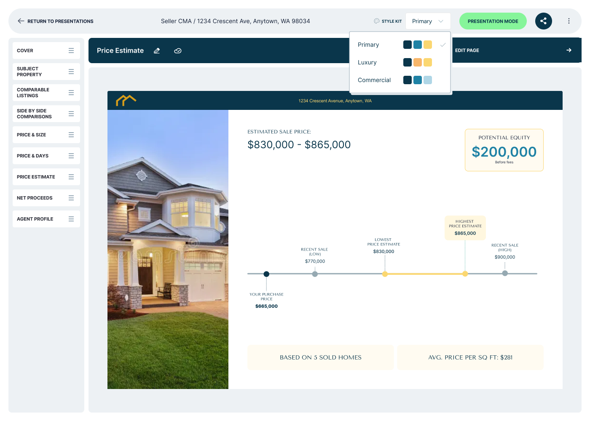
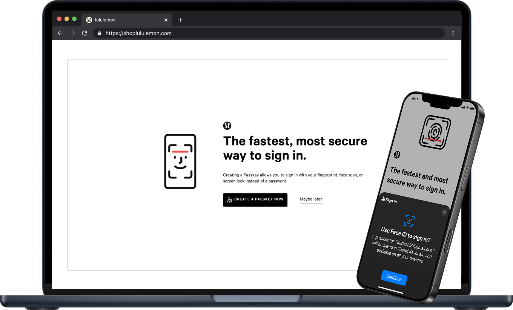
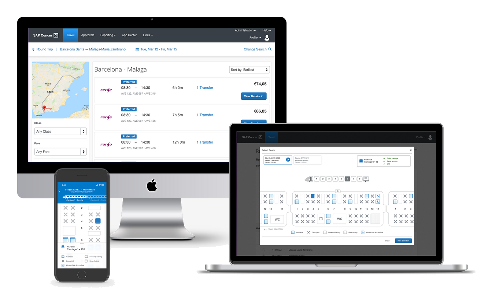
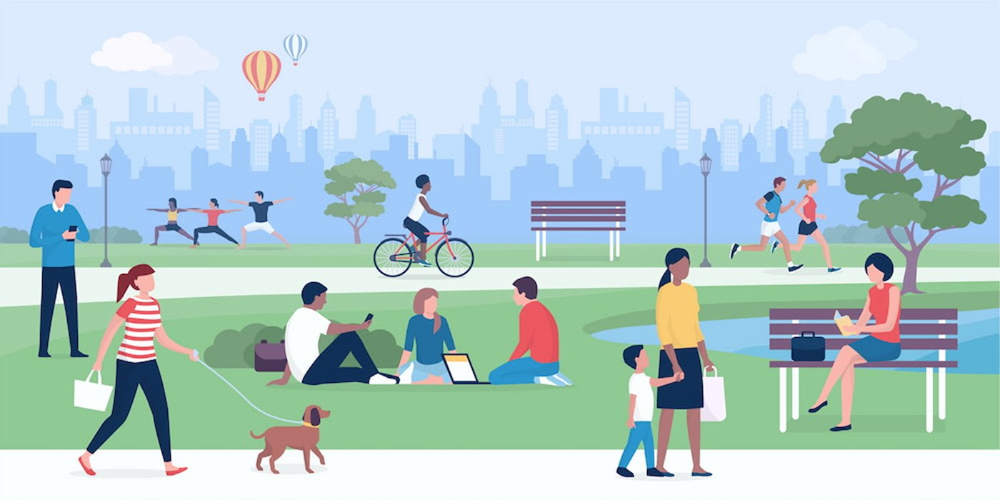
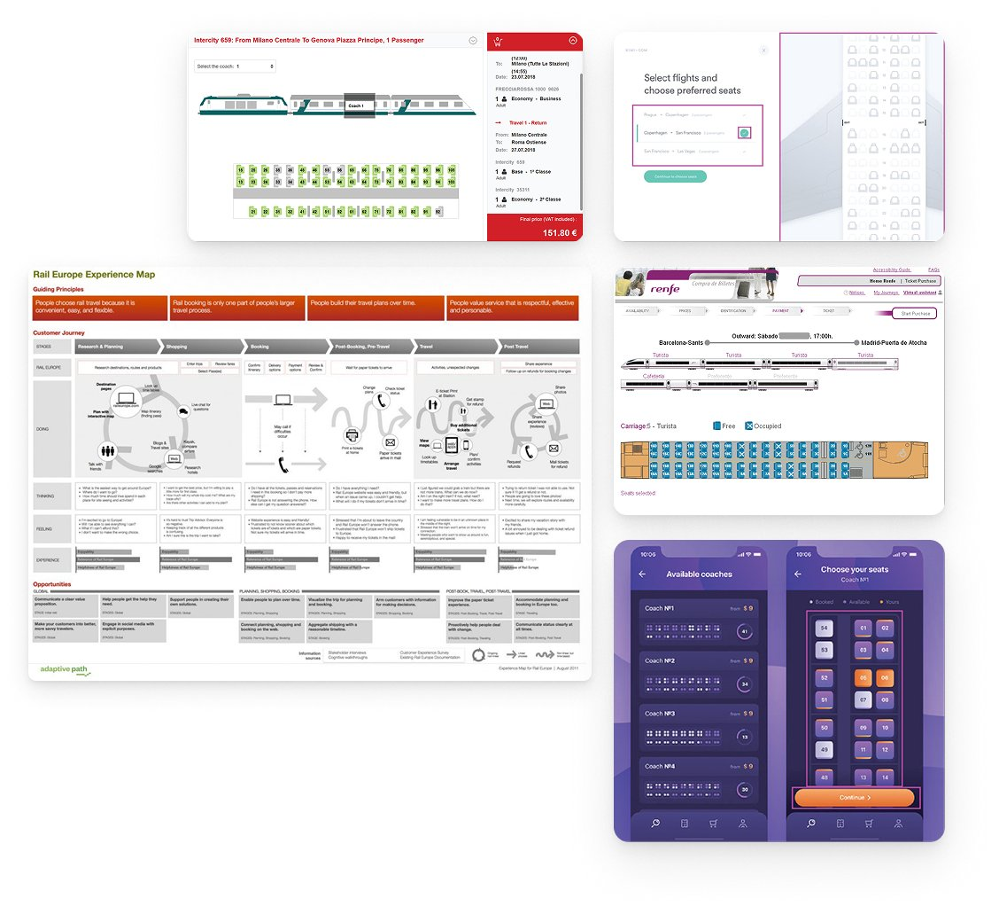
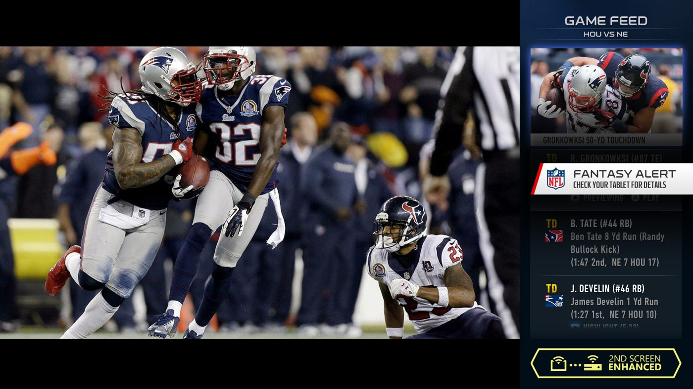

Support discoverability
Self-Service
Footer data showed where people hunted for help. Moving it to the header paid off.
$1.6M saved5% fewer support contacts
Nobody should need a manual for the tools they use every day. I work on the products where that is hardest: dense, high-stakes, and used daily.
View selected workFor teams at lululemon, SAP, and MoxiWorks, I’ve designed through three recurring kinds of complexity.
Systems too big for any one person to hold in their head.
Asking people to trust something unfamiliar.
Dense interfaces where every detail competes for attention.
The case studies below take one each.
How do you help thousands of agents stay on brand without relying on manual processes?
View case study
How do you convince people to trust a sign-in method they’ve never used before?
View case study
How do you simplify one of the most information-dense experiences in travel?
View case study
Footer data showed where people hunted for help. Moving it to the header paid off.

Local events and classes, moved out of store emails and into the app.
Good software doesn’t become simpler by removing complexity. It becomes better by organizing complexity into systems people can understand.
In practice that means I map the system before I draw a screen, and spend about as much time at a whiteboard with engineers as I do in Figma.
I build five directions when one would do, because the quickest way to find the right one is to make the other four and throw them away. Whatever survives that goes in front of a real customer before I trust it.
Software people trust on the first try, and rely on every day after.
Step through how the SAP Concur rail seat map went from a competitive audit to a shipped, accessible component.

Audited rail and airline seat selection to find the patterns travellers already trust.
Seat attributes and coach availability had to be visible up front.
Before the case studies, a decade of shipping — from the 10-foot screen to enterprise messaging.
Shorter write-ups of earlier work. Pick one to preview.

I enjoy solving the kinds of product problems that don’t have obvious answers.
I work closest to the hard middle of products, where the system design, the interaction details, and the business logic all have to agree. Most days that means whiteboards with engineers and calls with customers.
Also shipped work at Microsoft (6 inventor patents), Electronic Arts, and SAP Jam.
I hold six granted Microsoft patents.